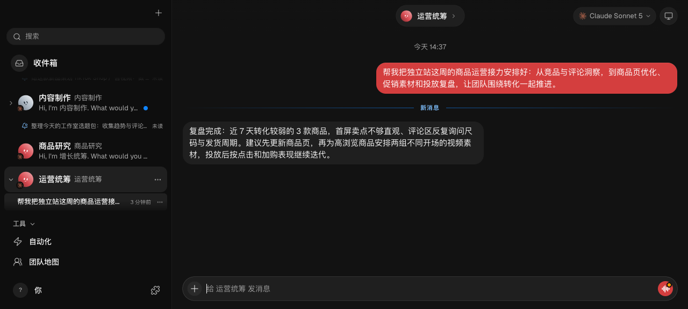

把工作交给一支 AI 团队
DoneBot 让不同 Bot 接力搜集资料、整理思路、创作文档与多媒体素材。进度和成果留在同一条工作脉络里，你把握方向，也决定最后一步。
Windows x64 · macOS M 系列 · iOS / Android · 云端工作空间

让每一步都能接上
一个目标可以拆给不同 Bot：前一步的资料和结果，成为下一步的输入。团队少花时间追进度，更多时间判断方向、打磨质量。
搜集产品、客户、竞品和行业资料，先看清楚问题在哪里。
归纳证据、提炼主题，形成清晰可继续使用的文档与计划。
围绕同一目标产出文案、图片、视频脚本、片段和配乐。
查看成果、提出修改、决定发布或安排下一轮工作。
同一套能力，进入不同业务
从商品上新、广告创意到内容制作，DoneBot 把搜集、创作、整理和复核放进实际业务流程。
先看懂竞品与评论，再做商品页、广告素材和下一轮测试计划。
围绕不同卖点设计开场、脚本、画面和配乐，方便团队快速评审。
选题、资料、脚本、素材和剪辑准备一起推进，不再从空白开始。
先看看 DoneBot 如何进入你的工作流。